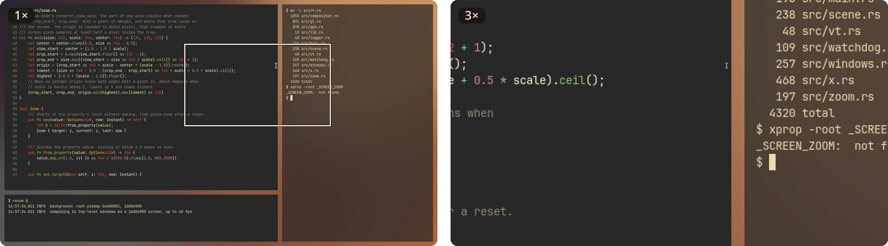
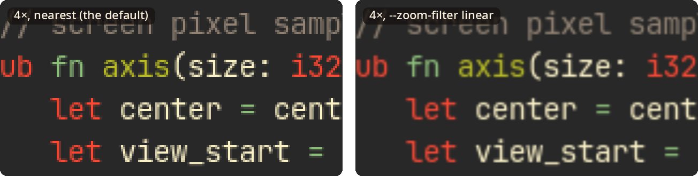

rxcom 0.3, an X11 compositor in Rust
The X server composes;
the whole desktop zooms.
rxcom composites an X11 desktop with nothing added: translucent windows blend right, games get the screen to themselves, and the X server does the drawing. Set one property on the root window, and the whole desktop magnifies around the pointer, up to 16x.
Why I wrote this
I run X11 with xmonad on an NVIDIA RTX 4070 SUPER, driving a 4K OLED monitor at 240 Hz, and I wanted to magnify the whole desktop around the pointer, as macOS does, without giving up speed or putting up with tearing. picom with a zoom patch kept freezing or going black on NVIDIA: it waits on X Sync fences whose wakeups NVIDIA's X server sometimes loses, more often after a VT switch, and its GLX path added lag. xcompmgr with the zoom ported to it worked, but it is a C program from the early 2000s.
So I wanted the smallest, fastest compositor that does just this: no effects, no configuration, the composition left to the X server with XRender, and the zoom driven by a _SCREEN_ZOOM root window property that any window manager can set. rxcom is built for that setup first, and its GL and Vulkan presenters are experiments. If your desktop looks like mine, read on; if not, the notes on NVIDIA's X driver may still interest you.
Small
It is about 4,300 lines of Rust, holds 4 to 5 MB, and uses no CPU while the screen stands still.
Plain
It has no shadows, fading, blur or rounded corners, and no configuration file, just a few options.
Out of the way
A full-screen game gets the screen to itself after 200 ms, and goes straight to the display.
A full-desktop zoom
The whole desktop magnifies from 1x to 16x around the pointer, driven by one root window property.
Zoom
Magnify everything, and keep your place
Set the zoom level on the root window and rxcom eases toward it in about a quarter of a second. The pixel under the pointer stays where it is, so clicks land where you see them, and as the pointer moves, the view follows it across the desktop.
The cursor keeps its normal size, nothing needs translating, and the whole desktop zooms, every window and the wallpaper between them.

Square pixels
Small text, only bigger
By default the zoom samples the nearest pixel, so every pixel comes out as a crisp square and small text looks exactly as it was drawn. The nested tests check it pixel for pixel against the mapping, computed independently. --zoom-filter linear smooths it instead.

One property
Zoom from anything that can set it
The level lives in _SCREEN_ZOOM on the root window: CARDINAL, format 32, one value, the magnification in 16.16 fixed point. No property, or 65536 (1x) or less, means no zoom; anything above 16x counts as 16x. Bind it to keys in your window manager, or in sxhkd or xbindkeys with a small script.
From a shell
# 2x, then back to 1x
xprop -root -f _SCREEN_ZOOM 32c -set _SCREEN_ZOOM 131072
xprop -root -remove _SCREEN_ZOOMFor key bindings, the README has zoom-step, a script that zooms in or out by 1.2x a press.
In xmonad
zoomBy :: Double -> X ()
zoomBy f = withDisplay $ \dpy -> do
root <- asks theRoot
atom <- getAtom "_SCREEN_ZOOM"
prop <- io $ getWindowProperty32 dpy atom root
let current = case prop of
Just [v] -> fromIntegral v / 65536
_ -> 1
target = max 1 (min 16 (current * f))
io $ changeProperty32 dpy root atom cARDINAL
propModeReplace [round (target * 65536)]Bind zoomBy 1.2 and zoomBy (1 / 1.2) to keys with additionalKeys, and zoomBy 0 to zoom out all the way.
How it works
The X server does the drawing
rxcom works the way xcompmgr does. The X server composes the windows with XRender into one screen-sized picture, only where something changed, so no window's contents ever leave it: no textures per window, no copies back and forth. A presenter then puts the picture on the screen, zoomed or not.
Composing per window on the GPU runs into NVIDIA's X driver in several ways: exported pixmaps pin buffers of hundreds of megabytes, imports take milliseconds, binding a pixmap waits for a vblank, and fence wakeups get lost. Composing in the X server avoids all of it.
- WindowsTheir pixmaps stay in the X server
- XRenderThe X server composes what changed
- The sceneOne screen-sized pixmap
- A presenterPuts it on the screen, zoomed or not
Presenters
The X server presents, too
--present picks what puts the picture on the screen. The X server is the default and the supported presenter; GL and Vulkan flip at vblank and are experimental. Where they cannot start, the X server presents instead.
| Presenter | How it shows the desktop | Known issues |
|---|---|---|
xsupported |
The X server copies the picture onto the screen, or draws it zoomed, with XRender. Works with any X server and driver, and needs no GPU context in rxcom. | It may tear, unless the driver keeps the screen tear-free itself, as NVIDIA's ForceFullCompositionPipeline does. |
glexperimental |
GLX shows the picture as one texture, waits for the X server's drawing through X fences, redraws only what changed, and flips at vblank. | On NVIDIA it can stall the X server's switch to another VT; with systemd-logind 258 or newer and a rootless X started by startx, the keyboard and mouse may not come back (systemd#43352). |
vulkanexperimental |
The picture is a Vulkan image the X server draws into through DRI3, presented with FIFO_LATEST_READY and flipped at vblank. | On NVIDIA its flips turn on variable refresh, which no setting turns off for one program, so it presents at every refresh and keeps the GPU at its top clocks. |
Games
Out of the way when it counts
When an opaque window covers the whole screen for 200 ms, rxcom steps aside: it unredirects the windows and hides its overlay, so a game flips straight to the display and keeps its own variable refresh. As soon as anything appears above it, or you zoom, rxcom composites again.
A window can ask for the screen with _NET_WM_BYPASS_COMPOSITOR set to 1, even when it is translucent, or ask to stay composited with 2, as a lock screen might. --unredirect-delay and --no-unredirect change the rule.
Tested
Checked pixel by pixel
Every test runs on a nested X server and compares screenshots with independent computations: the composited screen against the X server's own rendering, translucent windows against premultiplied blending, and the zoom from 2x to 16x against its mapping, computed in Python. A stress test throws hundreds of random moves, resizes, kills and zooms at rxcom under a window manager, and the screen must come out exact.
rxcom has run on NVIDIA's X driver at 3840x2160 and 240 Hz, where the X presenter is in daily use.
- 4,300
- lines of Rust, against xcompmgr's 2,400 of C
- 4 to 5 MB
- resident, with the X presenter
- 0
- frames and CPU while the screen stands still
- 0.1 ms
- of rxcom's CPU per 4K frame
Install
Build it, start it
rxcom runs on X11, with any X server that has Composite, DAMAGE, XFIXES, RENDER, SHAPE and SYNC, which every Xorg has.
Arch Linux
git clone https://github.com/crazyboycjr/rxcom
cd rxcom/packaging/arch
makepkg -siIt will be on the AUR as rxcom too.
From source
git clone https://github.com/crazyboycjr/rxcom
cd rxcom
cargo build --releaseYou need Rust 1.88 or newer, libxcb, and glslc from shaderc. The binary is target/release/rxcom.
Start it
rxcom &Run it from ~/.xinitrc or your window manager's start-up. rxcom --help lists the options, and -v logs frame statistics.